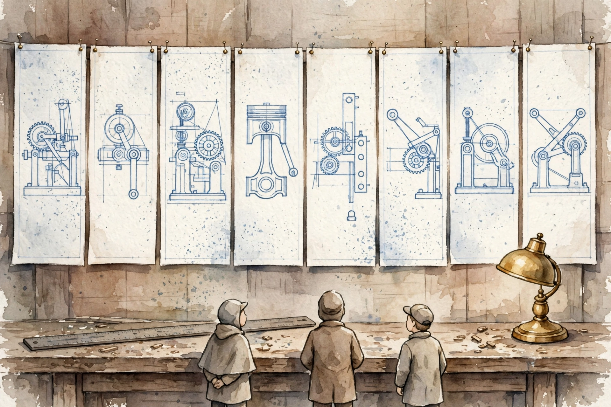
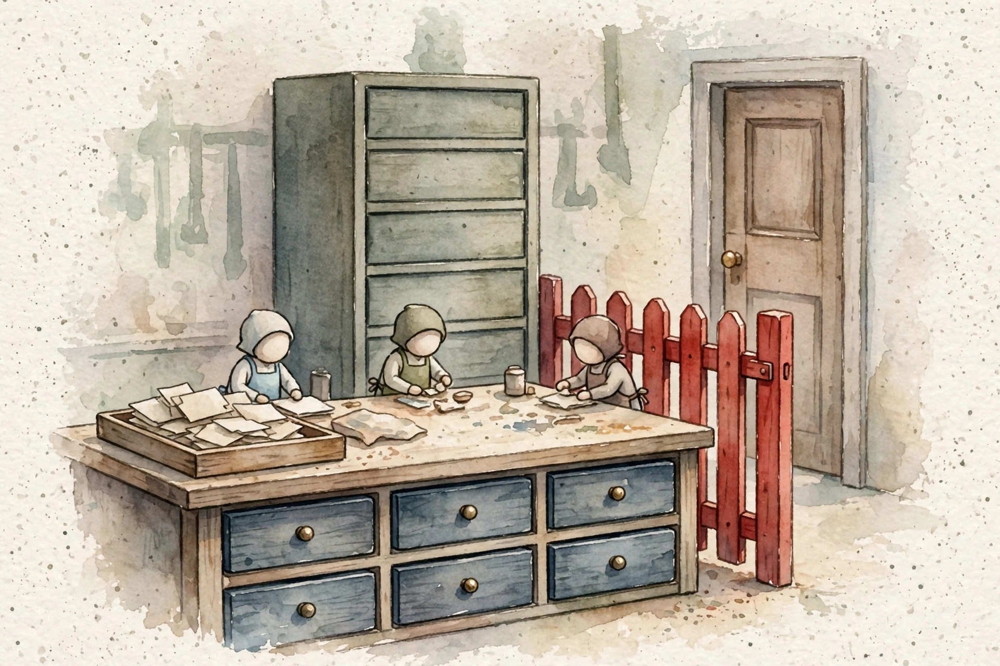
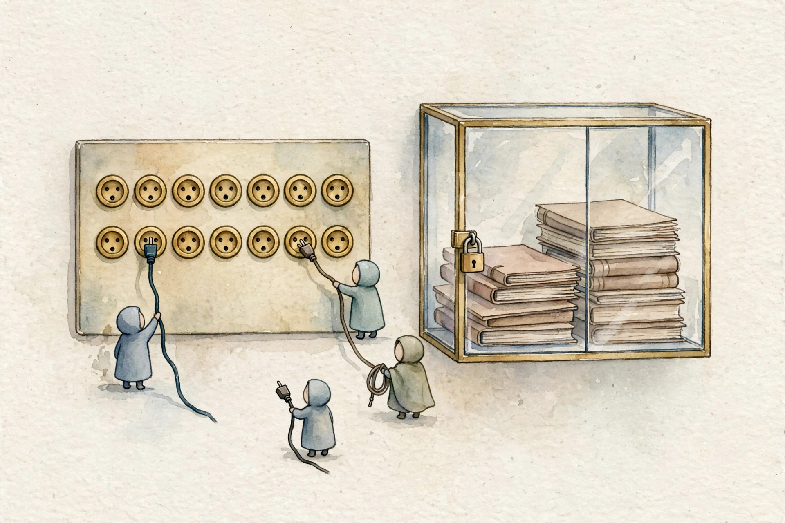
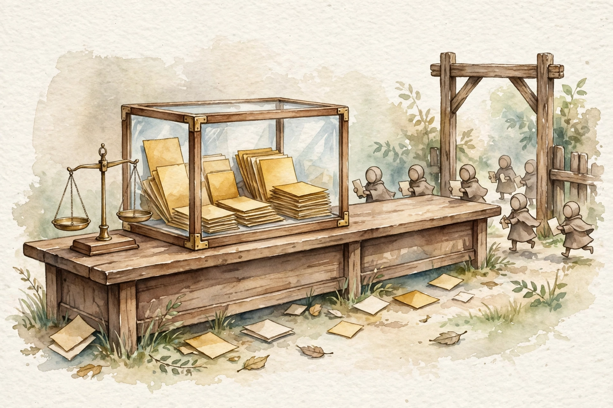

Companion · CCAR-P System Design Guide · 8 Reference Designs
Eight reference designs, one spine. State the limits first, walk the architecture, work the numbers, and name the trap the exam sets.
SOURCE / INTERPRETATION: HOW TO READ THE TAGS
From the lesson SOURCE: the idea, and every number beside it, comes from the cited section of the source. The phrasing is the companion's.
Illustration INTERPRETATION: invented by the companion: an analogy, a toy with made-up values, or a what-if. Never source content.
companion INTERPRETATION: companion voice: the idea above the tag is from the source. The generalization below it is the companion's.
From the lesson Guide intro
The guide holds 8 reference designs for the CCAR-P exam. Each design starts from zero. Problem, architecture, part choices, failure modes, worked numbers, and the exam angle fill each design in that order. One spine runs through all 8 designs. State the problem. Walk the diagram. Decide part by part. Name failure modes. Work cost and latency math. Close with the exam angle.
One read rule rules the guide. Match the problem shape, not the hype. Scale, latency, accuracy, compliance, and cost pick the architecture. A design picked before the limits face a defense the problem never asked for. Practice method from the source is plain. Cover the answer. Name the limit that rules out each wrong option. Then look. The credited answer is the best fit for the stated limit. Partial fit is the norm for the rest.
companion Step through the sequence. Open one step at a time.
State scale, latency, accuracy, compliance, and cost up front. The limits pick the design.
Walk the diagram box by box. Name what each part does and what each part hands to the next part.
Decide each part with a reason. State the rejected option and the limit that rejects the option.
Name the fault shapes. Pair each fault with a fix in the design, not in hope.
Work the numbers per request and per day. Cut the quiet multiplier first.
State the scenario shape, the trap, and the credited move in one pass.

From the lesson Design 1
A company holds 40,000 support documents. Manuals, tickets, and API references fill the set. Customers ask questions in a chat widget. Answers must come from the documents, cite sources, and never invent features. Volume is 10,000 questions per day. The p95 answer latency bound is under 8 seconds. Faithfulness must pass 90 percent. Documents change each week, so the index must stay fresh. Retrieval wins over fine-tune work here. Facts change each week and weights go stale. Retrieval wins over a full corpus prompt here. No window holds 40,000 documents.
Two paths run through the system. The index path takes documents in once. The query path takes a question in and an answer out per request. Chunk work splits each document into pieces for retrieval. An embedding turns each piece into a vector. A vector store holds vectors plus metadata such as document ID, section, date, and product line. A query takes the same embedding path as the documents. Vectors from apart models do not compare. Retrieval returns top chunks near the query vector. A rerank pass scores the set with care and keeps the best few. The model answers from the kept chunks and cites chunk IDs.
Data shape picks the split. Prose takes section cuts at 500 token windows with 10 to 20 percent overlap. The table in the source sets prose at 512 tokens with 50 overlap. Tables index as rows with metadata filters, with no mid row cuts. Code splits by function, with the signature kept with the body. Support tickets take one chunk per ticket, so a problem stays with the fix. API references take one chunk per endpoint. Contracts take section aware layered cuts, since clauses cite other clauses. One split rule for all shapes breaks tables and code in ways retrieval cannot fix.
Stage one casts a wide net at low cost. Dense vector search finds sense match. BM25 keyword search finds exact terms such as error codes. The two lists merge into one order. A metadata filter can cut 90 percent of the corpus before search and cut cost by a factor of 10. Retrieval takes the top 40 to 100. Stage two is a cross-encoder rerank. The rerank model reads each query and chunk pair as one text and scores fit. The top 40 fall to a top 5 for the prompt. The source gain is 10 to 20 points of faithfulness for a few hundred milliseconds.
A golden set is fixed and versioned in git. The source range is 200 to 500 real questions with known good answers and support document IDs. The set covers each document type and the hard shapes. Multi-hop, vague, and no-answer cases sit in the set on purpose. Each run measures retrieval recall, faithfulness, answer fit, and latency per document type. A total score can hide a weak type. One source case pairs a 96 percent total with one type at 70 percent. A change gate blocks release until a change beats prior scores.
Five faults recur. A stale index cites old prices, so re-index on document change events with a freshness stamp per chunk. A boundary split cuts a warning from the act the warning bans, so overlap or layered retrieval guards the seam. An embedding swap with no re-index makes all scores junk, so re-embed the full corpus in one cutover. A poison document carries instruction text, so treat retrieved text as data, scan at intake, and bar document text from the instruction role. A no-answer question earns an invention, so the prompt must refuse where chunks give no support, and the eval set measures the refusal rate.
The source labels the case as a worked case with stated price shapes. About 70,000 chunks come from 40,000 documents at about 800 tokens each in 512 token chunks. Index cost is about 3.60 dollars at 0.10 dollars per million embedding tokens for 36 million tokens. Per query, rerank costs about 0.002 dollars. The model call takes about 3,000 input tokens and 300 output tokens at 3 and 15 dollars per million. The call costs about 0.0135 dollars. The day total at 10,000 queries is about 155 dollars, about 4,650 dollars per month. Latency sums to about 3 seconds. Embed takes 50 milliseconds, retrieval 80, rerank 400, and the model call about 2,500. A top-k cut from 5 to 3 saves about 30 dollars per day and harms faithfulness on multi-hop cases. The source calls that trade a bad one.
Read the data shape first. A legal case with clause cross references takes section aware layered cuts with hybrid retrieval. Fixed cuts split clauses from the definitions the clauses need. Pure vector search misses exact clause numbers. A second trap offers a chunk size raise for recall. The credited act is small chunks plus a reranker, or layered retrieval.
RAG latency budget per query
The Design 1 worked case, in milliseconds per stage
| Item | Value |
|---|---|
| Embed query | 50 |
| Retrieve top 40 | 80 |
| Rerank 40 to 5 | 400 |
| Model call | 2500 |
Source: 09-system-design-guide.html, Design 1 cost and latency math. Total about 3 seconds against a p95 bound under 8 seconds. Prices in the source worked case carry an illustrative label in the source.
From the lesson Design 2
An IT helpdesk agent serves 5,000 staff. The agent can look up accounts, reset passwords, restart services, file tickets, and query the asset store. The agent must resolve 60 percent of requests with no human. The agent must never take a harmful act with no approval. The agent must never leak one staff record to a apart person. Each act earns a log entry for audit. A tool is a function the model can call. A JSON schema states the name, the account, and the parameters. Code runs the tool. The model runs no code.
The loop runs in order. A user message enters with the system prompt, tool definitions, and chat history. The model plans a step. The model emits a tool call with a name and arguments. Code checks the call before any run act. An approval gate pauses harmful or private tools for a human. Read tools pass the gate. Code runs the tool with time bounds, retries, and audit logs. The result returns as data. Tool output can carry prompt injection, so the system trusts no tool output. The model calls a tool again or answers. A max iteration cap stops an endless loop.
A tool definition has three parts. The name is a verb plus an object. The account tells the model the job, the fit cases, and the bar cases in plain words. The parameter schema states types, must fields, and fixed value sets. Few coarse tools beat many fine tools. One update tool with a status value set beats five apart status tools. Fixed value sets bar free text faults, such as a priority of super urgent. Server side checks run again on each call. A trust in model schema care is a fault. Return small structured results. A tool that dumps 10,000 rows floods the context. Return a top set with a total count and a page tool for the rest.
Bloat is a full tool set given just in case. At 40 tools the model weighs each tool on each turn. Tool accounts eat context on each call. Near twin tools clash, such as reset, change, and rotate acts on one credential. Accuracy falls as tool count passes about 15 to 20. Three controls answer the fault, in cost order. Prune tools with no sound use in 30 days of logs. Group tools by domain and load a domain set only on entry to that domain. Progressive discovery lets the agent search for tools by need and load matches. One force control adds aim. The tool_choice field can force one tool, force any tool, or bar tool calls for a turn.
Errors split by the party that can fix the fault. Model fixable faults are bad arguments and wrong date forms. State the fault in plain words and let the model retry. Code fixable faults are a down API and a stale auth token. Back off, refresh, and retry in code. Human faults, such as a closed account, go to a human. Short faults take retries with back off, at a cap of 3 tries. Set faults go back to the model with a reason and no retry. Each tool call takes a time bound, such as 10 seconds. A circuit breaker fails fast on repeat down faults. A mutating tool takes an idempotency key, so a retry files one ticket, not two. The loop cap in the source case is 10 tool calls per request.
Gate strength tracks how hard an act is to undo. Read only acts take no approval and earn a log entry. Acts a team can reverse, such as a ticket file, take no approval and show the act with an undo path. Harmful or private acts, such as a password reset or a record cut, take clear human approval with a full act preview. A time out defaults to a deny, never to an allow. Acts no one can reverse, such as an account end or a device wipe, take approval plus a second factor from a apart human. The approval note shows the act in plain words. Approvals expire after 5 minutes. The log names the approver.
The source labels prices in the case as a worked shape on a mid tier model at 3 dollars per million input tokens and 15 per million output tokens. One turn carries 4,000 input tokens and 400 output tokens. One turn costs 0.018 dollars. Three tool turns plus a final answer turn cost about 0.06 to 0.08 dollars per request. At 5,000 requests per day with 60 percent agent resolution, cost is about 210 dollars per day and about 6,300 dollars per month. Tool accounts hold a quiet cost. Forty tools at about 150 tokens per account equal 6,000 tokens on each turn. A cut to 6 tools via discovery saves about 0.014 dollars per turn, about 170 dollars per day at 12,000 turns per day. One turn takes about 2 to 4 seconds of model time plus tool run time. Three turns take about 10 seconds. The SLA must bar approval wait time in plain terms.
Three exam shapes recur. A 35 tool agent with a fall in accuracy takes prune and group acts with progressive discovery, not a bigger model. A delete power takes tiered human gates with a deny default on time out, not a log act. An admin wide service account is a least privilege fault. The fix is scoped rights per tool with user identity in the call. Human gates mean tiered gates. Watch on each step does not scale and the exam marks that act down.

From the lesson Design 3
A market product must build a weekly brief. The brief draws news from 50 sources, pulls rival moves, checks claims against first sources, and fills a 5 page brief. One agent in sequence takes 40 minutes. The context fills with raw text and the brief weakens as the run grows. The design must cut wall time to under 10 minutes and keep the writer context clean.
Task shape picks the topology. Orchestrator-workers fits apart parallel parts, such as 50 sources in parallel with one merge. Evaluator-optimizer fits work a judge can score, such as a draft and a critic in a loop. A sequence pipeline fits steps where each step needs the prior output, such as extract, check, then write. A hierarchy fits work that splits into sub work that splits again, such as a rival split by product, price, and hire lines. A mesh with handoffs fits experts that must trade work with judgment. The brief case mixes forms by phase. Workers gather. A sequence step checks claims. An evaluator loop shapes the draft.
Each subagent holds an own window with the task slice, the tools, and the history for that slice alone. No subagent reads a peer window. The orchestrator holds shared state and hands each agent a summary, not raw text. The source works the scale. Fifty texts at about 3,000 tokens each equal 150,000 tokens of raw material. Summary returns cut the set to about 15,000 tokens. The writer sees 15,000 clean tokens in place of 150,000 noisy tokens. With no isolation, three walls hit. Window caps bind. Attention dilutes as task text crowds the window. Each reason step re-pays the full context cost.
Subagents earn facts on demand. The orchestrator gives a task pointer. The subagent lists what exists, reads the strong candidate, and searches only when the map stays vague. Each step costs more than the prior step, so work stops at the cheapest step that answers the need. Discovery wins on large or vague task shapes. A full load up front wins only on small tasks with full prior knowledge, where discovery call cost beats the save.
Coordination faults rule this design. Deadlock takes time bounds and one owner per choice. Repeat work takes orchestrator assignment, with no self assignment. Clash on one record takes one writer per resource. Lost updates take version marks on shared state. Cascade faults take isolation plus checks at each edge. Verbose reports fill the orchestrator window, so strict output schemas with field caps bind each return. Endless delegation takes a depth budget of 3, and each handoff must shrink the task. The source math for the brief case totals under 0.40 dollars. Fifty small tier workers cost 0.225 dollars. Orchestration and draft work on a strong tier cost 0.16 dollars. Wall time is about 2 minutes to gather, 2 to check, and 4 to draft with one critique loop.
Match independence to topology. Apart parallel research takes orchestrator-workers. A draft that needs a judge takes an evaluator loop. A mesh for apart tasks adds needless coordination. One agent for a 50 source job bursts the context. Name context isolation as the quality engine where a case says output weakens as the agent reads more documents.
From the lesson Design 4
A bank platform team must open 12 in-house systems to Claude based assistants for 2,000 engineers. Each team built an own link. The result is 12 apart auth schemes, no audit trail, and no way to cut one assistant with no break to the rest. The mandate is one standard link layer, firm auth, full audit logs, and a security review a chief security officer can sign.
MCP, or Model Context Protocol, is an open protocol from Anthropic. The protocol sets one standard shape for links between AI apps and tools or data sources. Three roles fill the shape. The host is the AI app the user touches. The host owns the session and the safety policy. The client lives in the host, one client per server link, and speaks the protocol. The server opens powers to the client. Servers give tools the model can call, resources the model can load as read data, and prompts as reuse templates. Client and server trade JSON-RPC notes. The model never talks to a server direct. The host sits in the middle at all times, and policy acts live in the host.
Transport is the path notes travel on. The choice sets where a server can live and how the server scales. Stdio runs the server as a local process on one machine, over input and output pipes. Stdio fits local developer tools for one user. Stdio fails multi user production, since one process per user does not scale and no network auth layer exists. Streamable HTTP runs the server as a real HTTP service. The form fits production with many users, central deploy, load balance, TLS, and OAuth. SSE is an old remote form from the first spec. New builds take Streamable HTTP. The bank case takes Streamable HTTP over TLS for central servers. Stdio would mean 2,000 local processes with 12 local setups.
The MCP auth spec delegates auth to OAuth 2.1. The user logs in one time and grants a scope set. The client earns a scoped token. Steps run in order. The client finds the auth server from server metadata. The client holds a client ID with no shared secrets in config files. The user logs in at the bank identity provider and grants scopes such as tickets read and tickets write, not tickets admin. The client earns a short life access token and a refresh token. Each tool call carries the access token. The server checks the token and the scope before the act. Revoke is instant and per user. Scope design is the true choice. Scopes match tool risk tiers. A token with all scopes is a review fault, not a shortcut.
The trust edge sits between client and server. Each call that crosses the edge takes auth, a rights check, and a log entry. Return data counts as raw input until checks pass. The source list for the security sign off has six parts. Least privilege per server, with one service identity per server. User identity in the token, so a system applies the rights of that engineer. Secrets stay server side in a secret store, never in schemas, prompts, or logs. An append only audit log records who, tool, arguments, result, and time, and ships to the SIEM. Resource care scans loaded data at intake for instruction text. Approval gates at the host pause harmful tools before the client sends the call. Three faults recur. A confused deputy acts on wide server rights in place of narrow user rights, so user rights bind at the server. Token leak prints a token into a result, so servers redact tokens and hosts scan results. Prompt injection in a resource plants orders in a runbook, so intake scans plus a data not orders rule guard the path.
Remote, multi user, or production in a case points to Streamable HTTP. One developer laptop points to stdio. One shared service account for all users is the confused deputy fault. The fix is user identity in scoped tokens with per user revoke. One false claim needs care. MCP does not replace API auth. MCP sets how OAuth tokens flow. The server still checks each caller.

From the lesson Design 5
Prompt cache work stores the worked form of a prompt prefix for reuse. Most production prompts are about 90 percent same per call. System text, examples, documents, and tool accounts repeat. A team marks up to 4 breakpoints. All text up to a breakpoint is a cacheable prefix. The first request is a cache write at about 1.25 times base input price. A later request with the same prefix is a cache read at about 0.1 times base input price, a 90 percent cut on the cached part. Entries expire on a time to live of 5 minutes by default, with a 1 hour option. Each hit refreshes the timer. Match is exact and prefix ordered. The cached part must be byte same, at the start, on the same model. One word change mid prefix drops all cache past that word. Minimum prefix size runs from 512 to 4,096 tokens by model.
The source labels prices in the case as a worked shape. Base input is 3.00 dollars per million tokens. A write costs 3.75 per million. A read costs 0.30 per million. The prompt holds an 8,000 token stable prefix plus 500 fresh tokens. Traffic is 1 request per minute, so the 5 minute timer never lapses between requests. With no cache, one request costs 0.0255 dollars. With cache in steady state, one request costs 0.0039 dollars. The cut on input cost is 85 percent. The first write costs an extra 0.006 dollars. Each later request saves 0.0216 dollars. The first hit repays the write cost in full. At 100,000 requests per day, cache work saves about 2,160 dollars per day and about 65,000 dollars per month. The bet loses at 1 request per hour. Each request lands after the timer lapse, pays the write cost, and earns no read. Cache work then costs 25 percent more than no cache work.
Order the prompt from most stable to most change first to last. Breakpoints sit at stability edges. Four checks run in order. Reuse asks if reads occur at a pace that beats the write cost. Length asks if the prefix clears the minimum size. Stability asks if the prefix lasts minutes, not seconds. Time fit asks if the reuse pace fits in the entry life. The cache killer is per user data at the top of the prompt. Timestamps, request IDs, and user data never sit in the cached prefix. Tool accounts are strong cache stock. Tool accounts are long, same across turns, and costly in the Design 2 bloat case. Four breakpoints at true stability edges beat extra breakpoints with write cost and no gain.
Four shapes make cache work a loss. Low reuse pace pays write costs with no reads. Short prompts below the model minimum earn no cache at all. A 300 token prompt gains zero from cache work as a hard fact. Change prefixes die before payback. The 1 hour option costs about 2 times base input on the write, against 1.25 times for the 5 minute form. The long form wins only when reuse spreads thin across the hour. One false comfort needs a bar. Cache work cuts input cost alone. A request with 4,000 output tokens pays an output bill cache work cannot touch.
A long system prompt with steady traffic takes stable first order with breakpoints and cache on. A break even case gives requests at 20 minute gaps against a 5 minute timer. Cache work loses cash there. The honest acts are the 1 hour form or no cache work. A workload of one of a kind 400 token prompts at two per hour takes no cache act at all. The credited fix moves to tier choice or output length.
Cost per request with cache and with no cache
The Design 5 worked case, in dollars per request times 10,000 for chart scale
| Item | Value |
|---|---|
| No cache, x10000 | 255 |
| With cache, x10000 | 39 |
Source: 09-system-design-guide.html, Design 5 worked cost math. Per request cost is 0.0255 dollars with no cache and 0.0039 dollars with cache in steady state. Prices in the source case carry a worked shape label in the source.
From the lesson Design 6
Claude models open via three doors with the same weights. The direct Anthropic API is door one. New models and features land there first. Zero Data Retention deals serve fit customers, so the provider stores no prompt or response data after the serve act. One bar sits in the deal. Set frontier models need short retention and safety review even under the deal. The direct API with the deal is fit for health data deals, but the API cannot pin work to one cloud region. AWS Bedrock is door two. Data stays in a chosen AWS region. Bills flow via the AWS account. New features can lag the direct API. Google Vertex AI is door three. Data stays in a chosen Google region with Google bills and the same lag shape. One date note in the source needs care. A September 2026 note sets 30 day retention for set frontier model families, so those models cannot run under a zero retention deal with no clear grant. Check retention per model, not per deal alone.
Five axes split the doors. Residency is region bound on Bedrock and Vertex, and deal bound on the direct API. Zero retention is a deal on the direct API and cloud terms plus region work on the cloud doors. Feature pace is first on the direct API and later on cloud doors. Latency is one global route on the direct API and region near routes on cloud doors. Cost is base price on the direct API and cloud price shapes with bill merge on cloud doors. Cache support is full and first on the direct API, and present on both cloud doors for Claude models.
All traffic enters via one router the team controls. Callers never pick a provider direct. The router runs health checks on each door with test requests that measure error rate and latency. The active door serves 100 percent of traffic in normal state. Standby doors stay warm, with live rights, warm caches, and warm link pools. A cold standby turns a failover into a second outage. On a health fail past a bound, such as 30 seconds of high errors, the router shifts traffic in steps. Step shifts stop flap harm. Failover never crosses a residency edge. An EU bound load moves to an EU endpoint alone. Active-passive is the default. One door serves and the rest stand by, and prompt caches stay warm on one provider. Active-active splits traffic, splits cache hit rates, and clouds fault work. One cache fact drives budget care. Cache entries live on one provider. A failover drops the warm cache, so early minutes bill full input price until the new cache warms. Pin exact model versions on all three doors. Set the fail back rule in advance, such as a sound provider for 15 minutes plus warm caches, and drill the move.
Four faults recur. A failover storm flaps traffic on noisy health checks and cold starts caches per flap, so fail fast one way and fail back slow, with step shifts. A residency breach sends EU traffic to a US endpoint in a crisis, so residency is a hard route rule with chaos drill tests. Feature skew leaves a standby door short one feature, so run the eval suite on each provider, not the main door alone. Auth sprawl stacks three rights systems on three rotation clocks, so one secret store with rotation alerts serves the router.
Read the stated limit first. A German bank that must keep customer data in the EU points to Bedrock or Vertex in an EU region. A health start up that needs a zero retention deal for health data points to the direct API deal. An AWS native team that needs low latency to own workloads points to Bedrock in region. Failover is never free. Input cost spikes until caches warm on the new door.
From the lesson Design 7
An eval is a repeat test that scores system output on a known input. Prompts, models, and data change on a steady pace, and model acts vary per run. With no evals, each change is a guess. Four parts form the loop. A golden set is a frozen versioned test set with known good answers. A judge scores output against a rubric, with calibration before trust. CI gates run the suite on each change and block a merge on a fall back. Watch acts sample live traffic and alert on score drops. Production faults feed new golden cases, so the set tracks the live mix.
Build the set from production. Sample real user inputs, strip names, and let domain experts write or clear the true answers. Cover each document type, each tool, and each tongue in scope. Hard cases sit in the set on purpose. Vague cases, multi-hop cases, and no answer cases where a clean refusal is the pass act all count. Size in the source is 200 to 500 cases for most systems. Under 100 cases, noise rules the score. A 3 point swing can rest on two lucky cases. Version the set, the rubric, and the judge prompt as one set. A score move must answer one question. The system change or the test change must take the blame, in plain terms the record can show.
A judge model scores output where exact match tests fail. The judge takes the input, the system output, the true answer, and a rubric with point rules. One sample rule in the source gives 2 points for a cite to the right section, 1 point for a right answer with no cite, and 0 points for a clash with the true answer. The judge returns scores plus a short reason. Calibration is the trust act. Humans score 100 outputs. The judge scores the same 100 outputs. Accord under about 85 percent means fix the rubric or the judge before trust. Judge bias favors long answers, bold tone, and own family style. Rubrics that tax bulk and spot human audits counter the bias. A strong judge costs more per run. Teams often judge on a mid tier model and send clashes and top stakes cases to humans.
Gates run on each pull request and block a merge on a fall back. Five rules bind. An accuracy floor holds total score over the set bound, such as 90 percent faithfulness on the RAG golden set. A per part fall back rule bars any document type, tool, or query class from a drop over 2 points, even when the total holds. A latency cap holds p95 under the SLA, such as 8 seconds. A cost cap holds mean tokens per task in budget. A safety slice of attack and bar content cases must pass at 100 percent. Safety is a pass or fail fact, not an average. The pipeline posts a score diff as a pull request note, with the part that fell in plain view.
CI tests the built system. Watch acts test the system users meet, with inputs no one plans. Sample live traffic at 5 percent and score the sample each night with the judge pipe. Track the trend, not the level alone. A 1 point per week decay is data drift and stays dark with no trend line. Log each request in structured form. Prompt version, model version, tools called, tokens, latency per stage, and final output form the record. Alerts fire on judge score drops, refusal rate spikes, tool error spikes, p95 SLA breaks, and cost per task jumps. Each production fault the golden set misses becomes a new golden case. The source prices the pipe. A full run on 300 golden cases costs about 7.20 dollars. Ten pull requests per day cost about 72 dollars per day, about 2,160 dollars per month. Night sample work costs about 5 dollars per day. Total eval spend stays under 2,500 dollars per month in the case.
Three shapes recur. A fine total with one weak part takes per part measure and a fix to the weak part before launch. Judge design takes a rubric plus human accord calibration. A bare 1 to 5 rate act is noise. A ship act with no evals takes the gate set with accuracy, per part, latency, cost, and safety rules. Fault find work starts from structured logs. Prompt version, retrieved chunks, and tool traces split the fault into retrieval, reason, or data class.

From the lesson Design 8
Each design in the guide is one point in one triangle. Cost, latency, and quality pull in three ways. A team can hold two corners with ease. The third corner pays. Names come first in the procedure. Rank the stated limits. Find the bound limit that rules the case. Map limits to the triangle. A p95 bound pins the design near the latency corner. An accuracy SLA pins the design near the quality corner. A per request cost cap pins the design near the cost corner. Pick the cheapest point that meets the bound limit. Architecture cheats the triangle in set ways. Cache work moves cost down with no quality loss. Route work sends easy cases to a cheap tier and hard cases up. Batch work cuts cost where latency has no value.
The source table carries a check date of September 2026 and an illustrative label in the source. Haiku class costs about 1 dollar per million input tokens and 5 per million output tokens, at the fastest pace. Sonnet class costs about 2 and 10, at a mid pace, as the default for agents, RAG answer work, and judges. Opus class costs about 4 and 20, at the slowest pace, for hard reason work and strict accuracy cases. Two ratios teach the table. Output costs about 5 times input. Each tier costs about 2 times the tier below. Three price acts sit past tier choice. Cache work cuts repeat input at 90 percent. Batch API cuts async work at about 50 percent. Output discipline cuts the dear tokens first, via short answer rules, structured forms, and a refusal in place of a long invention.
Budgets turn money and time into per request caps before design work. The source table sets five case shapes. Support chat on RAG takes about 3,000 input tokens and 300 output tokens per request, with a p95 bound of 8 seconds. A helpdesk agent turn takes about 4,000 in and 400 out per turn at a cap of 10 turns, with a p95 bound of 10 seconds per turn and approval wait out of scope. An extraction subagent takes about 3,000 in and 300 out, with a 120 second bound in background work. A brief writer plus critic takes about 20,000 in and 4,000 out, with a 10 minute bound in background work. An eval judge case takes about 2,000 in and 200 out on batch work at a 50 percent cut. A contract review case with a 95 percent SLA takes time in minutes on async work at the top tier. The SLA prices the tier. The tier does not price the SLA.
Design 1 pairs a mid tier answer model with a rerank spend of 0.002 dollars per query as the cheapest quality on the menu, with a top 5 chunk cap as the cost guard. Design 2 runs a mid tier loop with a small tier for route steps, and bloat control doubles as cost control. Design 3 runs a small tier for 50 extraction workers and a top tier for orchestration, draft, and critic acts, at about 0.40 dollars per brief against about 0.90 on a top tier for all parts. Design 4 holds the security edge as a fixed rule at any tier. Design 5 prices the cache break even before cache on. Design 6 budgets the cache rewarm at failover and bars a residency cross for a cost save. Design 7 runs batch evals at a 50 percent cut with mid tier judges, and holds eval spend under about 5 percent of serve spend.
One classic case states 10,000 requests per day, a 0.02 dollar per request cap, and a 95 percent accuracy SLA. Top tier on all work breaks the cost cap. Small tier on all work breaks the SLA. Cache work on a one of a kind prompt earns no reuse. The credited design tiers the load. A small model filters and routes. A mid tier model serves standard cases with cache work. A top tier model takes the hard slice alone. Per part evals prove the SLA holds. Where two answers meet the limit, the cheaper answer wins. An answer that meets cost and breaks the SLA is wrong at any price.
Study plan minutes by design
Reading time per design in the study plan for this guide
| Item | Value |
|---|---|
| Guide use | 2 |
| Design 1 RAG | 12 |
| Design 2 Agent | 12 |
| Design 3 Multi-agent | 9 |
| Design 4 MCP | 10 |
| Design 5 Caching | 9 |
| Design 6 Failover | 8 |
| Design 7 Evals | 10 |
| Design 8 Trilemma | 9 |
Source: study/09-system-design-guide.json in the source repo. Minutes sum to 85 with the intro at 1 minute and the three closing sections at 1 minute each.
From the lesson Closing sections
The guide holds seven domains. Domain 1 holds 17 percent. Domain 2 holds 13 percent. Domain 3 holds 19 percent. Domain 4 holds 16 percent. Domain 5 holds 14 percent. Domain 6 holds 14 percent. Domain 7 holds 7 percent. The prerequisite volume is Claude Developer Fundamentals.
The practice question bank holds 106 questions. The system design guide holds 8 reference designs. The crash course covers all 7 domains. Exam facts in the source are 63 items, 120 minutes, proctored delivery, and a pass mark of 720 out of 1000.
Every lesson on this page, in order. Tap one to return to its chapter.